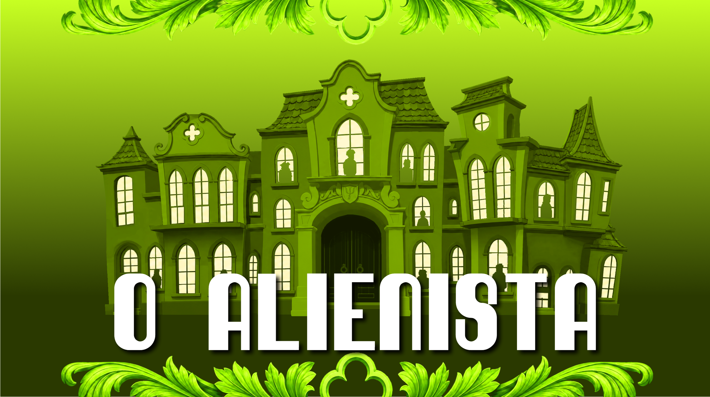
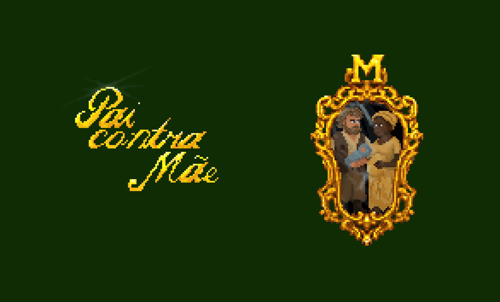

Projetos
O que eu construí
Cada projeto é um produto de inovação tecnológica desenvolvido dentro de projeto de extenssão da faculdade, um como bolsista e outro como voluntário.
ℹ️ COMO NAVEGAR
Clique em qualquer card abaixo para abrir os detalhes completos do projeto.
Projetos em Ordem
{{ projects.1.tag }}

{{ projects.0.year }}
{{ projects.0.title }}
{{ projects.0.desc }}
{{ projects.0.stack.0 }}
{{ projects.0.stack.1 }}
{{ projects.0.stack.2 }}
VER PROJETO COMPLETO →
{{ projects.0.tag }}

{{ projects.1.year }}
{{ projects.1.title }}
{{ projects.1.desc }}
{{ projects.1.stack.0 }}
{{ projects.1.stack.1 }}
{{ projects.1.stack.2 }}
VER PROJETO COMPLETO →